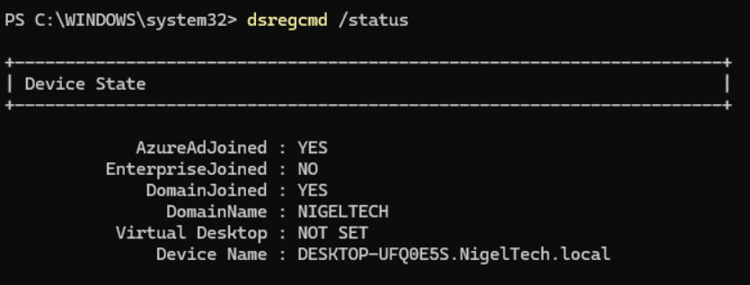
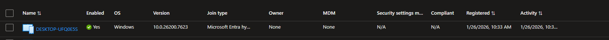

← Back to Portfolio
Project Overview
Configured hybrid Azure AD join for domain-joined Windows 11 devices in the NigelTech.local environment. This implementation enables seamless single sign-on (SSO) to both on-premises and cloud resources, allowing devices to authenticate to Azure AD while remaining joined to the on-premises Active Directory domain.
Technologies Used: Azure Entra ID, Azure AD Connect (Entra Connect), Group Policy, Windows Server 2022 Active Directory, Windows 11, PowerShell
Business Problem
Organizations with hybrid infrastructures need devices to access both on-premises resources (file shares, printers, legacy apps) and cloud services (Microsoft 365, Azure resources). Traditional domain join only provides on-premises authentication, while Azure AD join only provides cloud authentication. Hybrid Azure AD join solves this by enabling dual authentication, providing users seamless access to both environments with a single sign-on experience. This eliminates the need for users to authenticate separately for cloud and on-premises resources.
Lab Environment - NigelTech.local
- Windows Server 2022 Domain Controller (DC01.NigelTech.local)
- Azure AD Connect (Entra Connect) server with hybrid configuration
- Windows 11 Pro workstation (initially workgroup, then domain-joined)
- Azure Entra ID tenant
- Synchronized user accounts: nigeladmin and test users
Implementation Steps
Phase 1: Domain Join the Windows 11 Workstation
Before hybrid Azure AD join can occur, the device must first be joined to the on-premises Active Directory domain.
- Logged into Windows 11 workstation as local administrator
- Opened PowerShell as Administrator
- Ran domain join command:
Add-Computer -DomainName "NigelTech.local" -Credential (Get-Credential) -Restart
When prompted for credentials:
- Username:
NIGELTECH\nigeladmin
- Password: [domain admin password]
The workstation automatically restarted after successful domain join.
Phase 2: Verify Domain Join and User Login
- After restart, Windows 11 login screen displayed "Other user" option
- Clicked "Other user" to access domain login
- Signed in with domain credentials:
- Username:
NIGELTECH\nigeladmin
- Password: [Active Directory password]
- Successfully authenticated against on-premises domain controller
- Verified domain join status in System Properties (Computer Name tab showed "NigelTech.local")
Phase 3: Azure AD Connect Hybrid Join Configuration
- Logged into Azure AD Connect (Entra Connect) server
- Opened Azure AD Connect configuration wizard
- Selected "Configure device options"
- Chose "Configure Hybrid Azure AD join"
- Selected target operating system: Windows 10 or later (for modern devices)
- Configured Service Connection Point (SCP) to publish Azure AD tenant information to on-premises Active Directory
- Verified tenant credentials and domain selection (NigelTech.local)
- Completed wizard - this automatically created the SCP in the Configuration partition
- Azure AD Connect initiated a sync cycle to apply changes
Phase 4: Trigger Hybrid Join Registration
- Returned to Windows 11 workstation (still logged in as NIGELTECH\nigeladmin)
- Opened Command Prompt as Administrator
- Checked initial device state with
dsregcmd /status
- Output showed:
- DomainJoined: YES (confirmed domain join successful)
- AzureAdJoined: NO (not yet hybrid joined)
- Restarted the workstation to trigger automatic hybrid join registration
- During restart, device queried the SCP and discovered Azure AD tenant
Phase 5: Validate Hybrid Azure AD Join
- After restart, logged back in as
NIGELTECH\nigeladmin
- Opened Command Prompt as Administrator
- Ran
dsregcmd /status again to verify hybrid join
- Output confirmed successful registration:
- AzureAdJoined: YES
- DomainJoined: YES
- DeviceId: [unique device identifier in Azure AD]
- TenantId: [Azure AD tenant ID]
- AzureAdPrt: YES (Primary Refresh Token acquired)

Command output showing AzureAdJoined: YES and DomainJoined: YES, confirming successful hybrid Azure AD join
Phase 6: Azure Portal Validation
- Logged into Azure Portal → Entra ID → Devices
- Located the Windows 11 device in the devices list
- Verified device properties:
- Join Type: Hybrid Azure AD joined
- Enabled: Yes
- Registration timestamp matched when device completed hybrid join
- Owner: nigeladmin@[tenant].onmicrosoft.com
- Confirmed device is now visible to Azure AD and can be targeted by conditional access policies

Azure Entra ID Devices view showing registered device with "Hybrid Azure AD joined" status
Key Concepts Learned
Domain Join vs Hybrid Azure AD Join
Domain Join is the first step - using Add-Computer PowerShell cmdlet to join a workstation to the on-premises Active Directory domain. This enables authentication to the domain controller and access to on-prem resources.
Hybrid Azure AD Join is the second layer - the domain-joined device automatically registers with Azure AD when a domain user signs in, after the SCP is configured. This registration happens in the background without user interaction.
Service Connection Point (SCP)
The SCP is a critical Active Directory object that domain-joined devices use to discover which Azure AD tenant to register with. When Azure AD Connect configures hybrid join, it creates this SCP object in the Configuration partition (CN=Services, CN=Device Registration Configuration). This makes the SCP forest-wide discoverable, so all domain-joined devices can automatically find the correct Azure AD tenant without manual configuration.
Automatic Registration Process
After the SCP is configured:
- Domain user signs into domain-joined device
- Device queries Active Directory Configuration partition for SCP
- SCP provides Azure AD tenant information
- Device contacts Azure AD and registers itself
- Azure AD issues device certificate and Primary Refresh Token (PRT)
- Device is now hybrid joined - visible in both AD and Azure AD
Primary Refresh Token (PRT)
When a device is hybrid joined and a user signs in, they receive a PRT from Azure AD. This token enables SSO to cloud applications without additional authentication prompts. The PRT is tied to the device and user combination, providing secure seamless access to Microsoft 365, SharePoint, Teams, and other Azure AD-integrated apps.
Key Learning: The dsregcmd /status command is the primary troubleshooting tool for device join states. The output shows critical information including AzureAdJoined status, DomainJoined status, TenantId, DeviceId, and PRT status (AzureAdPrt). This command should be the first diagnostic step when troubleshooting device authentication issues.
Challenges & Solutions
Understanding the Two-Step Process
Initial Learning Curve: Initially thought hybrid join was a single operation, but learned it's actually a two-step process: domain join first, then Azure AD registration.
Clarification: You must domain join the device using traditional methods (PowerShell Add-Computer, GUI, or SCCM). Only after the device is domain-joined can it register with Azure AD. The "hybrid" aspect means the device maintains both identities simultaneously.
Waiting for Automatic Registration
Issue: After configuring Azure AD Connect for hybrid join, the device didn't immediately show AzureAdJoined: YES.
Solution: Learned that hybrid join registration happens automatically during user login after the SCP is configured, but it may take a few minutes or require a restart. The device queries the SCP during login, discovers the tenant, and registers with Azure AD in the background. Restarting the device after SCP creation accelerated this process. A full sync cycle from Azure AD Connect also helps ensure the SCP is properly replicated.
Credential Format for Domain Join
Learning Point: When joining a domain via PowerShell, credentials must be in the format DOMAIN\username (e.g., NIGELTECH\nigeladmin). Using just the username without the domain prefix will fail authentication. This is different from Azure AD where you use UPN format (user@domain.com).
Key Takeaways
- PowerShell Domain Join:
Add-Computer cmdlet with -DomainName and -Credential parameters is the quickest way to domain join a workstation. The -Restart flag automatically reboots after successful join.
- Automatic Process: Once Azure AD Connect configures the SCP, hybrid join happens automatically when domain users sign in. No manual per-device configuration needed beyond the initial domain join.
- Conditional Access Foundation: Hybrid join is required for device-based conditional access policies. You cannot enforce "require hybrid Azure AD joined device" without this configuration.
- SSO Benefit: Users sign in once with domain credentials and automatically get access to Microsoft 365, SharePoint Online, Teams, and other cloud resources without additional prompts.
- Troubleshooting Tool:
dsregcmd /status provides complete visibility into device state. Key fields to check: AzureAdJoined, DomainJoined, TenantId, and AzureAdPrt (Primary Refresh Token).
- SCP Importance: The Service Connection Point is the discovery mechanism. Without it, devices don't know which Azure AD tenant to register with, and hybrid join will fail.
Real-World Application
This lab demonstrates capabilities directly applicable to enterprise IAM roles:
- Using PowerShell to automate domain join operations at scale
- Configuring device identity in hybrid environments for large-scale deployments
- Understanding authentication flows between on-premises and cloud systems
- Using
dsregcmd for troubleshooting device join issues
- Implementing prerequisites for zero-trust security models (device trust)
- Enabling seamless SSO for improved user experience and reduced helpdesk tickets
- Laying groundwork for conditional access policies based on device state
Integration with Other IAM Components
Hybrid Azure AD join is foundational for several advanced IAM capabilities:
- Conditional Access: Enables "require hybrid Azure AD joined device" as a policy condition, allowing you to block access from non-corporate devices
- Intune Management: Hybrid joined devices can be co-managed by Group Policy and Intune, allowing gradual transition to modern cloud management
- Windows Hello for Business: Hybrid join is required for deploying Windows Hello in hybrid environments with certificate-based trust
- Seamless SSO: Works alongside hybrid join to provide optimal authentication experience across on-prem and cloud apps
- Compliance Policies: Device must be hybrid joined before Intune compliance policies can validate device health and security posture
← Back to Portfolio